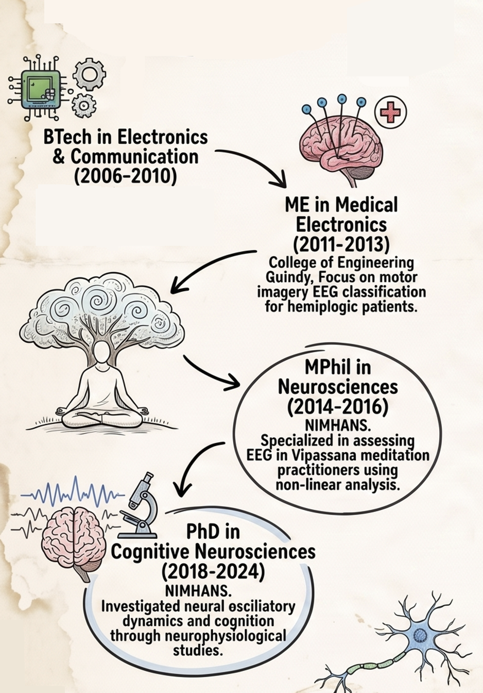

From Circuits to Consciousness
Welcome to my journey so far from the world of electronics and communication engineering to Consciousness research.
I began my career designing logic on circuit boards, only to realise the most complex operating system runs on wetware where there is no clear demarcation of the data, hardware and software. I traded silicon for synapses, and today, as a Cognitive Scientist at the Centre for Consciousness Studies (NIMHANS), my work revolves around multiple states (non ordinary as well) of Consciousness across illness and wellness in waking, sleeping, tasking, meditating and dreaming humans.

I am establishing a research niche on “Sense of Self” exploring how it emerges, fragments, and can be altered in various states like Schizophrenia, Autism, Depression, Lucid dreaming, altered states in meditation etc. This work integrates neuroscience, psychiatry, technology, Indian knowledge system based frameworks and contemplative sciences to understand the shifts of selfhood and their impact on mental health and lived experiences.
Foundations
My professional journey began with a mediocre, boring technical education in a private college where I did not learn anything! I took a break year post my BTech figuring out life. It turned my world upside down and landed me in a decent institute for a masters. I would say that I learned B Tech and M Tech together in 2 years! I loved working in the domain of neurotechnology building brain computer interfaces for stroke patients. The research focused on Brain-Computer Interface (BCI) applications for clinical rehabilitation, specifically investigating the feasibility of using Motor Imagery (MI) based EEG features to predict movement intentions in patients with hemiplegia. By collecting EEG data during left versus right-hand motor imagery, the study demonstrated that imagery-related desynchronization from central sensors could reliably predict intended hand movement. I got into Accenture via campus placement with a good package and ended up working on SAP software. That job sucked after 6 months! I locked myself in and cleared NIMHANS entrance exam and joined for an MPhil Neuroscience program. I resigned a month before results, saw some movies, tried all restaurants from one end of Marathahalli (an IT hub and infamous for traffic) to other!
The Quiet Mind: Contemplative Science & Non-Linear Dynamics
During my MPhil research at NIMHANS and subsequent collaborations, I moved
beyond conventional EEG analysis to understand the “texture” of a meditating mind.
Standard analysis approaches often misses the nuance of multiple meditative states in
Vipassana meditation.
I applied non-linear methods like Permutation Entropy and Fractal Dimension to high-density
EEG data to capture these inherent structures.
More recently, we deployed ML based approaches to understand how different meditation techniques are Similar States but Different Paths. You can read the recent paper from Matthew Sacchet’s group if you are interested in this area of work.
I am drawn pretty much to understand the structures of human experience. Got inspired from Ishan’s talk as well.
The Sleeping Brain: Stability, Spindles, and Sound
I was not sure of doing a PhD and decided to spent some more years in the same lab. My time as a Junior Research Fellow at the Human Sleep Research Laboratory was dedicated to understanding the micro-architecture of sleep in Vipassana meditators and healthy controls. I conducted over 125 whole-night polysomnography (PSG) studies, using auditory stimulation and transcranial Alternating Current Stimulation (tACS) to “shake” the sleep architecture and test its stability. We identified that sleep ERPs and tACS-induced spectral changes could serve as reliable markers for sleep stability.
We also explored how microstates dynamics shift during sleep in both healthy brains and those affected by Schizophrenia. I also co-supervised interns who developing machine learning classifiers to decode dream states from high-density PSG data using serial awakening protocols. we prototyped MVPA pipelines to decode dream states from sleep data using machine learning classifiers. We also developed pipelines to capture sleep stage transitions and conceptualising sleep and awake across a continuum and deploying information theory and similar metrics to characterise sleep better. Our centre also hosts advanced training in sleep research with Indian Society for Sleep Research. You can read these two papers 1 2 to know more about the field.
Recent works (PhD projects) have moved to developing real time protocols to modulate sleep spindles during sleep with oscillatory pink noise.
Can we enhance our cognitive skills: Cognition & Neuromodulation
Calenday shows 2018 and I joined for PhD bagging the institute fellowship. By the way, I got married in 2017! My PhD work focused on the “executive” of the brain: Working Memory. I wanted to know if we could map its limits and push the capacity limits using transcranial alternating current protocols. I designed a real-time adaptive working memory paradigm paired with high-density EEG to study the brain at its optimal capacity rather than at rest. Using tACS, I demonstrated that we could differentially modulate resting and task-related EEG data. By targeting specific frequencies (Theta and Gamma), we could influence the oscillatory dynamics underlying working memory. A significant portion of this work involved studying patients with Schizophrenia, using graph theory frameworks to identify specific profiles for targeted non-invasive neuromodulation. We showed the neural patterns across various measures that could track cognitive flexibility and optimal working memory capacity.
The Cardiac Signature: Heart Rate Variability (HRV) & Heart-Brain Interaction
We took a shot at Heart-Brain interactions using computational models of brain-heart interactions, and utilising robust and geometric versions of HRV analysis. We applied ultra short term heart rate variablity to understand OSA brains. This was a cool collab with the experts at St. Johns Institite, Bengaluru. Thanks to Dr. Uma, Dr. Kavitha and Dr. Karthik. We have two ongoing works looking at breathing patterns, micro-architecture of sleep and SpO2 signals.
This is an active area of work at our centre. The goal is to model and understand the three way interaction across nervous, cardiac and respiratory systems and how does respiratory/cardiac/neural phases modulate/influence behavior and mental states. I really got inspired by the works like this, and this. We have two MSc Neuroscience dissertations going on, studying cognitive task modulations (say reaction times and neural patterns) by cardiac phases (systole and diastole). One of them is building a hardware-software suite to track nasal cycles.
Cross-Modal Modeling: The project Unveiling the Heart-Brain Connection explored whether ECG signals could reliably reflect cognitive load. By extracting time-domain HRV metrics and “Catch22” descriptors from ECG and spectral power from EEG, we built a cross-modal XGBoost framework. This framework projects ECG features onto EEG-representative cognitive spaces, allowing mental workload inferences using only ECG.
Synthetic Data Augmentation: To address data sparsity and model brain-heart interactions, we integrated the Poincaré Sympathetic-Vagal Synthetic Data Generation (PSV-SDG) model. This algorithm combines EEG and cardiac sympathetic-vagal dynamics to provide bidirectional estimators of the mutual interplay between the central and autonomic nervous systems. Details are in this preprint
Further multimodal inquiry has investigated pupillometry as a non-invasive indicator of cognitive effort. Using the OpenNeuro dataset, we integrated feature-based and model-driven approaches to classify cognitive load from EEG and pupillometry.
The above three works were MTech dissertation works with mentees from Digital Univeristy, Kerala. Glad that they landed jobs in AI domain.
Teaching and Mentoring: Building the Lab
I have had the privilege of mentoring over 25 trainees and interns at NIMHANS, guiding them from modularised project ideas to full execution. Our collaborative projects have explored inter-brain synchrony during musical engagement , Heart Evoked Potentials across sleep stages, and the association between personality traits and executive control in school children. I collaborated with a bunch of hardware and software engineers to extend wireless wearable EEG devices with single-board computers for real-time neurofeedback and seizure prediction.

What’s happening now?
a) Phase 1 of predicting brain age index (chronological age minus brain age) from EEG is completed. Siddharth and Deepshik was heading this work and we publsihed the preprint. An ex-intern would extend this work to predict cognitive scores from EEG (December 2026 onwards)
b) Srinivasan and Aparna troubleshooted and ported Sense of Agency paradigms
to Python and integrated the timing markers with the LiveAmp EEG setup.
c) By understanding how the brain responds to the heart’s rhythmic signals, we can unlock new insights into interoception, cognitive load, and consciousness. Does the Heart Race with the Mind when we do a tough mental task? The brain doesn’t stop listening to the heart when we fall asleep. How do sleep stages modulate these HEPs? Can we track meditative depth with HEPs? What is being captured by HEPs? Lot more in this direction We did a detailed literature survey (Manasa and Chinmayi) on this and an intern is gearing up to pick this up for her master’s dissertation.
d) I am back to where it all began - BCI work in stroke. I am exploring imagined speech tracking with Dr. Subasree’s team at Stroke lab, Dept. of Neurology, NIMHANS. I am tagging along Dr. Arun and Nahida to do some neural speech tracking.
e) I am really inspired by this work and wrote a draft to study brain criticality measures from our larger EEG database from expert meditators across four traditions. Hoping to rope in couple of MESEC friends for expert collab.
f) Well, the Sense of Self readings are picking pace. Will take a shot at ANRF-
ECR grant of 2026. Will cut down some breadth to go deep into Sense of Self
projects.